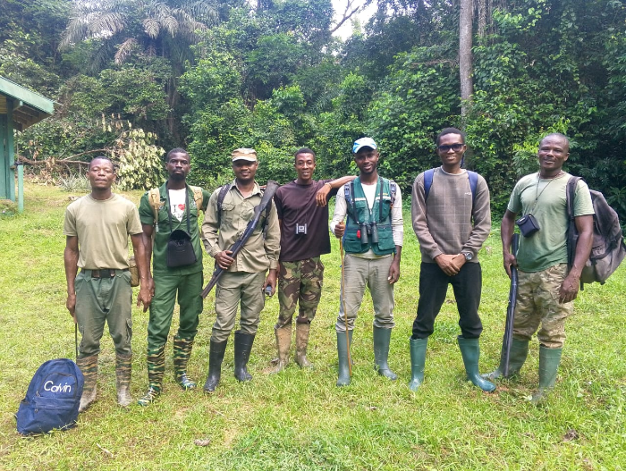
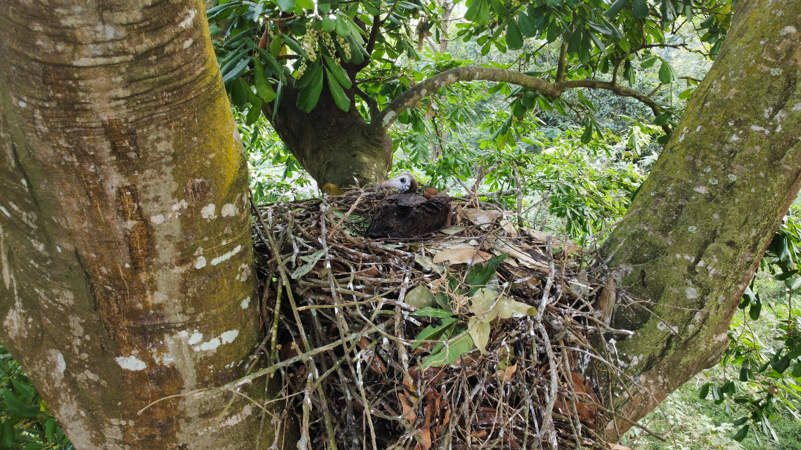

Where Science
Takes Flight
WingWatch Africa is dedicated to the scientific study, monitoring, and protection of Africa's diverse species and habitats — from the critically endangered to the beautifully abundant.
Science-Driven
Conservation
WingWatch Africa is a conservation NGO working at the intersection of ecology, policy, and community engagement. We conduct rigorous field research across West Africa, translating scientific findings into actionable strategies that protect biodiversity and support the communities that depend on it.
Our approach is grounded in the belief that lasting conservation requires honest science, informed policy, and people who understand the landscapes they live in.
Learn More About Us
Field Work
Our Focus Areas
Five interconnected pillars — each essential to building a resilient, ecologically sound future for Africa's people and wildlife.
Biodiversity Conservation
Species monitoring, habitat protection, and ecosystem restoration
Learn more →Sustainable Agriculture
Promoting agroecology, agroforestry, and soil health practices
Learn more →Environmental Protection
Tackling waste management, water conservation, and reforestation
Learn more →